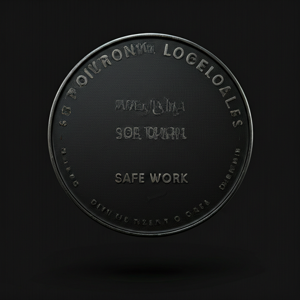

Le Terroir Malien : L'Âme de Bamako
Une sélection rigoureuse des meilleurs produits de notre terre. Cultivés avec passion, sélectionnés avec exigence pour votre table.


"La terre dicte le rythme, nous ne faisons qu'écouter."
— Seydou, Maraîcher à Kati
Nos Producteurs Locaux
Nous tissons des liens étroits avec les agriculteurs de la région de Koulikoro et de Sikasso. Chaque produit que vous trouvez dans nos rayons raconte l'histoire d'un travail acharné et d'un respect profond pour la nature.
Pas d'intermédiaires superflus, juste une ligne directe entre la ferme et notre épicerie. C'est notre engagement pour une fraîcheur absolue et un soutien concret à l'économie locale.
Rencontrer nos partenaires arrow_forwardSélection du Moment
Au rythme des saisons, nous sélectionnons les joyaux de la production locale pour des saveurs incomparables.
Mangue Kent
Charnue, sans fibres, à la douceur exceptionnelle.
Papaye Solo
Chair ferme et parfumée, récoltée à maturité optimale.

Piments Doux
Croquants et savoureux, parfaits pour vos salades composées.